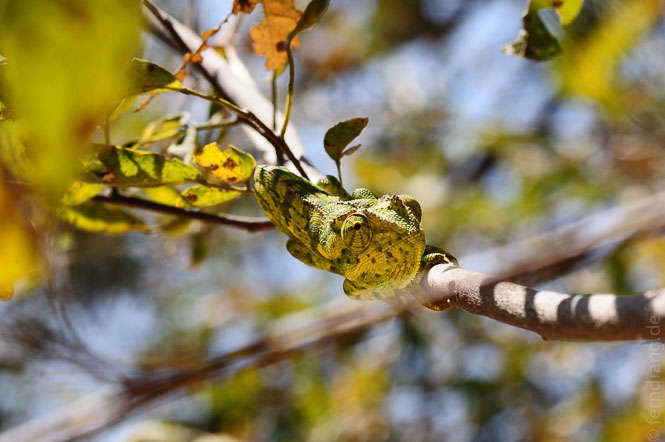
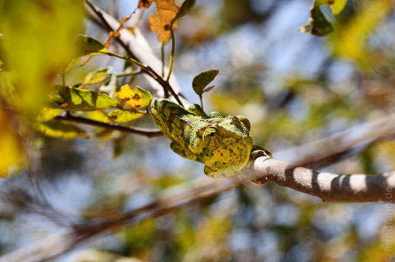
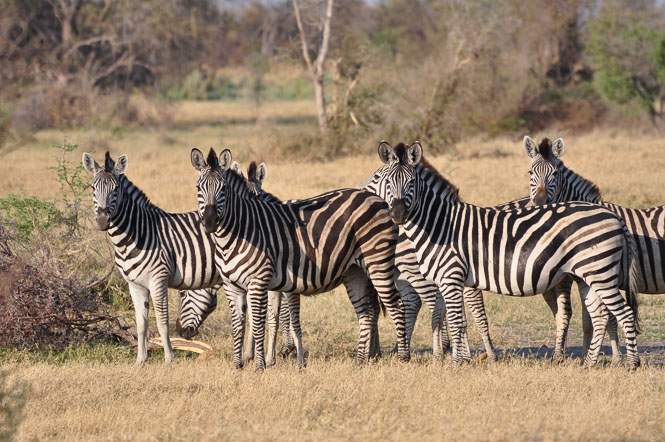
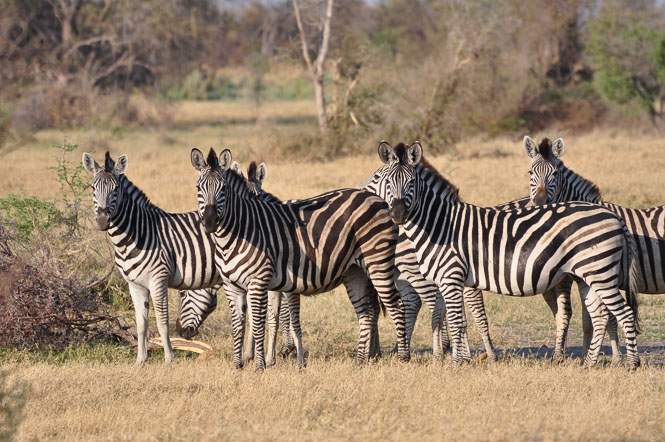

Wir sind ja nicht wegen der tollen Camping-Plätze nach Botswana gekommen. Für uns war der Köder das Okavango-Delta. Und die bevorzugte Fortbewegungsmethode ist dort auch das Mokoro, das diesmal mit Stöcken wie eine Gondel bewegt wird. Daher standen für uns drei Tage Mokoro und Campen im Delta auf dem Programm.
Von einem Urvieh von Automobil sind wir zum Ablegeort gebracht worden. Das Monster hat sich problemlos durch Sand und Seen gefressen. Überhaupt konnte man das Delta schon deutlich spüren, da die Hälfte des Weges unter Wasser lag.
Nach fast zwei Stunden hatten wir die Mokoros erreicht. Dort hat sich das typische Karawanen-Problem ergeben: Wir brauchten einen Führer und einen Koch, zu viert braucht man aber jede Menge Zeug, so dass noch ein extra Boot her musste, das wiederum einen weiteren Stocherer brauchte usw. Am Ende standen vier Zelte mit vier Helfern um uns herum.
Zu unserem Zeltplatz sind wir durch eine wunderschöne Wasserlandschaft gestochert worden: Wasserlilien und Schilf so weit das Auge reicht. Die Mokoros gleiten so sanft über das spiegelglatte Wasser, dass einem Gehen dagegen wie ein Gewaltakt erscheint. Das Wasser ist meist nur knietief, so dass die Tiere zwischen den vielen Inseln wechseln können. Neben einer Unzahl von Vögeln konnten wir vom Boot aus schon Elefanten sehen.
Die Mittagshitze scheint hier stärker nieder zu brennen als bisher. Daher liegt eine ausgedehnte Siesta von vier Stunden über den heißen Stunden. Da wir Dank eines nutzlosen Briefings am Vorabend eine extreme Gepäckoptimierung betrieben haben, hatten wir keinerlei Zerstreuungshilfen dabei, um die Langeweile zu mildern. Einzig ein Chamäleon, das sich durch ungeschicktes Kotablassen verraten hat, hat für Abwechslung gesorgt. Währenddessen zeigten sich die ersten Rauchwolken über der Nachbarinsel.
Abends haben sind wir ein paar Stunden über die Insel gewandert. Bei diesem Bush-Walk wurden wir aber von der Tierwelt überrascht. Was auf den ersten Blick vertrocknet wirkte, beheimatet ganze Zebra- und Giraffenherden. Zu Fuß durch diesen Garten Eden zu stapfen, war besonders reizvoll. Die Tiere waren zwar streng auf Abstand bedacht, doch ohne laute Motoren gliedert man sich einfach besser ein. Als es auf den Sonnenuntergang zu ging, ist der Kitschfaktor am Zebrateich fast unerträglich geworden.
Die Abende verbringt man hier vor dem Bushman’s TV - dem Lagerfeuer. Auf dem zweiten Kanal lief die Fortsetzung von “die Nachbarinsel brennt ab” als hübscher roter Schein.
Die verbleibenden Tage haben wir mit noch mehr Wanderungen und Mokoro-Ausflügen verbracht. Auch wenn sich nicht jedes Tier in Person gezeigt hat, so konnten wir durch Spuren im Sand und durch Kot-Review auf ihre Anwesenheit schließen. Nachdem die Nachbarinsel schließlich lichterloh gebrannt hat, gab es wieder Sundown-Kitsch am Hippo-Tümpel. Viel zu sehen gab es hier nicht, weil die Hippos meistens auf Tauschstation waren. Dafür ist eins von ihnen nachts um unser Lager geschlichen und hat gebrüllt und gefaucht wie ein Wahnsinniger, dass einem die Haare wehen.

 

 
